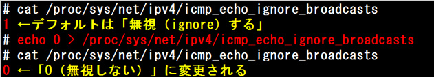

- 問題ID : 21799 高度なネットワーク構成
- 履歴
コマンド：
# ping -b 192.168.1.255
結果：
正解
ブロードキャストアドレス宛てにpingを実行している
重複した応答が返ってきている
解説
ping コマンドは、指定された宛先アドレスに対してICMP Echo要求を送信します。ICMP
Echo要求を受け取り、自分のアドレス宛であると認識した機器は、送信元に対してICMP Echo応答を送信します。このICMP Echo応答が
ping コマンドの結果として表示されます。
ping
コマンドの宛先アドレスには、特定の機器を表すユニキャストアドレスだけではなく、マルチキャスト（特定グループ宛）アドレスやブロードキャスト（ネット
ワーク内の全ての機器宛）アドレスも指定できます。ブロードキャストアドレス宛てに ping を実行する場合は、「-b」オプションを指定します。
マ
ルチキャストアドレスやブロードキャストアドレスを指定して ping コマンドを実行すると、1つのICMP Echo要求に対して、複数のICMP
Echo応答が返ってくることがあります。こういった時に、ping
コマンドは重複した応答であることがわかるように、結果に「(DUP!)」を付けて表示します。
よって正解は
・ブロードキャストアドレス宛てにpingを実行している
・重複した応答が返ってきている
です。
その他の選択肢については、以下の通りです。
・ユニキャストアドレス宛てにpingを実行している
「-b」オプションを指定しており、ブロードキャストアドレス宛てにpingを実行していますので、誤りです。
・マルチキャストアドレス宛てにpingを実行している
マルチキャストアドレスは「224.0.0.0/4（224.0.0.0〜239.255.255.255）」の範囲です。192.168.1.255は含まれませんので、誤りです。
・192.168.1.1と192.168.1.102の情報は動的に更新されている
「(DUP!)」は「Duplicate（重複）」を意味しています。動的更新（Dynamic Update）と言った意味ではありませんので、誤りです。
なお、ブロードキャスト宛の ping は重大なネットワーク障害を引き起こす可能性があります。
ping コマンドでのICMP Echo要求の送信時にパケットサイズを1000バイトとして送信すると、ICMP Echo応答も同じサイズ（1000バイト）で返ってきます。
そのため、例えばネットワーク内に200台の機器が存在し、ブロードキャストアドレス宛に1000バイトのICMP Echo要求が送信されると、1000 x 200 = 200,000 バイトが送信元に返ってきます。
さ
らに送信間隔をデフォルトの1秒から1ミリ秒に変更すると、1秒間に200,000 x 1,000 = 200,000,000 =
200MBのデータが送受信されることになり、1マイクロ秒（1,000,000分の1秒）間隔に変更すると200,000,000,000 =
200GBのデータが送受信される事になります。
こういった特性を悪用した「Smurf攻撃」という攻撃手法が存在するため、Linux
のデフォルトではブロードキャスト宛のICMPパケットに応答しないようになっています。ブロードキャストアドレス宛のパケットに応答するようにするに
は、以下のいずれかのコマンドを実行します。
・/proc ファイルシステムの値を変更する

・sysctl コマンドでカーネルパラメータを変更する